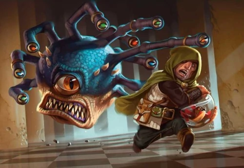

Look at this thing. It loves its fish, Bro.
Properly written, the Xanathar is a conundrum when it comes to Beholders of itself. Treated like a name, "Xanathar" is a proper title, Passed down through at least 15 beholders underneath the city of Waterdeep. While the initial Beholder was indeed named Xanathar, after the second beholder struck that one down and took its place, it became a title. Besides this, the Beholders are paranoid creatures and took measures to minimize who exactly got to see the Xanathar.
Throughout this lineage, it is currently left with the most famous Xanathar, Zushaxx. Zushaxx is an enigma of a beholder, because, While
they exhibit the traits of paranoia, god like narcissism, hoarding, and lack of care for others, this last one has a fault: Sylgar.
In the image above, a gnome is running away with a "Goldfish" in a jar. This is Sylgar, the Xanathar's beloved pet fish, in its travel tank.
Sylgar is just a fish. That's it. The xanathar holds Sylgar to the same standard as itself, which is an unseen trait in beholders for any creature.
The care for this pet is so extensive, that the Xanathar has a goldfish caretaker. This caretaker, more often than not, has to replace
this unfortunate fish. It's incredibly dangerous, as the loss of this fish would cause the beholder to go on a rampage. One book specifies that
the loss of this goldfish would "allow the Xanathar to shoot off every one of its eye rays at once". Comparatively, a beholder can shoot 2 of out 10 in a turn.
Caring for this fish is to the extent that the head of waterdeep is secretly involved in the operations.
I have only had to deal with one Xanathar - the title of a procession of beholder crime bosses who mastermind Waterdeep's most notorious theives' guild -
on my watch as Open Lord of Waterdeep. As far as beholders go, this one hasn't been exceedingly monstrous. Perhaps it is due to my dearth of experience dealing with megalomaniacs,
Underdark tyrants, and depraved wizards, but beholders are fairly easy to contend with once you uncover their particular paranoia.
The guild leader has attached itself to a fish named Sylgar, which it lavishes affection on and derives a sense of security from. It's just one idiosyncrasy
in an encyclopedia of stranger beholder behaviors that leave me puzzled.
Regardless, I've used this carp to my advantage, and have worked with the Xanathar's lackeys to keep Sylgar alive. It certainly wouldn't serve me to comment on rumors
I've secretly provided new Sylgars when old ones perish.
However, I will say that I've learned much of Delimbiyr Carp in recent years, particularly their sensitivity
to temperature and how frustratingly long it takes to safely introduce them to their new bowls.
- Laereal Silverhand, Open Lord of Waterdeep, 1442 DR